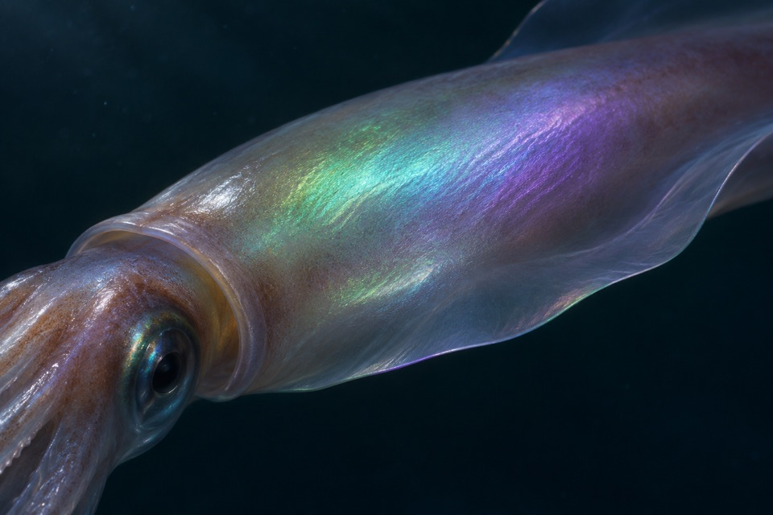
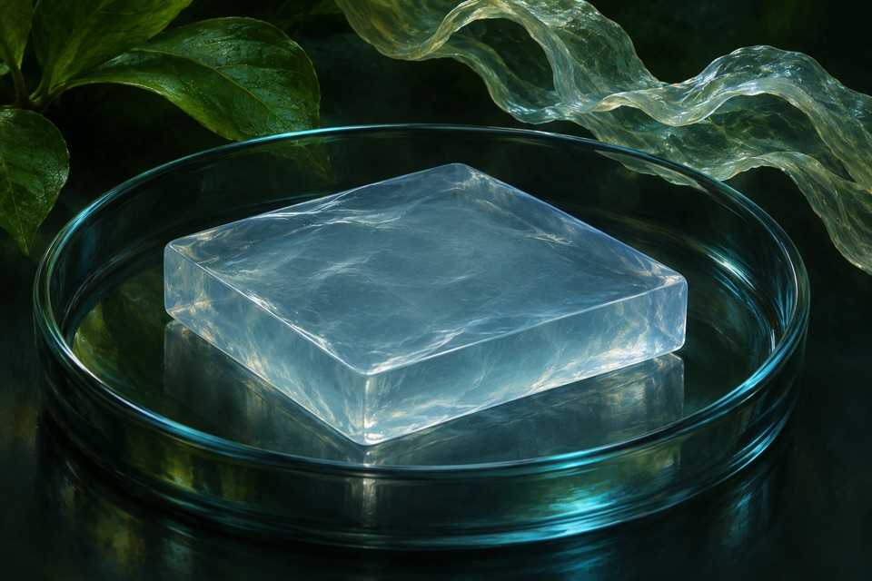
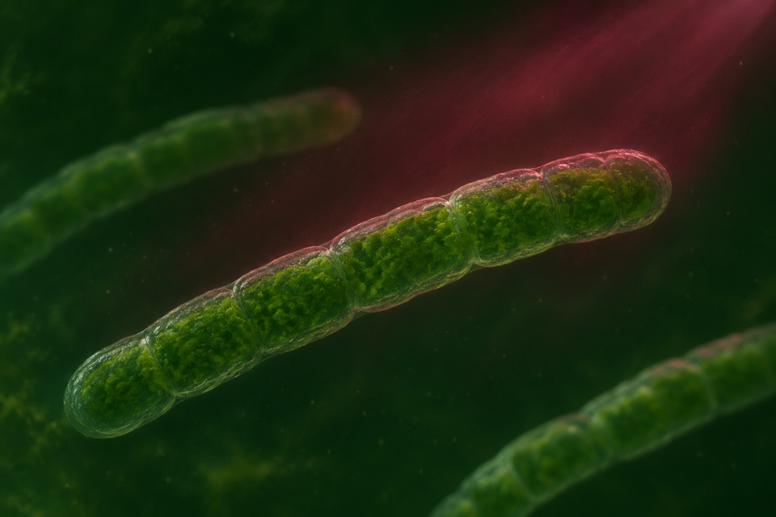

Module 01
Ferritin-based magnetic resonance contrast
Measure MRI contrast associated with ferritin expression in a defined tissue.
Evidence recordOpen any of the ten modules to see the reported observation, its sources, and the research questions still open.
Measure MRI contrast associated with ferritin expression in a defined tissue.
Evidence record
Measure spectral reflection shifts during neural activation.
Evidence record
Shorten photosynthetic recovery after transition from strong light to shade.
Evidence record
Measure gellan production and distinguish polymer mass from rheology.
Evidence record
Measure reporter fluorescence under low-oxygen or anaerobic conditions.
Evidence record
Measure how individual pigment organs expand and coordinate during pattern switching.
Evidence record
Reroute glycolate generated by photorespiration and assess photosynthetic efficiency and biomass.
Evidence record
Produce and distinguish levan fructan species from sucrose.
Evidence recordResolve rapid changes in membrane potential from a calibrated optical trace.
Evidence record
Measure far-red excitation and charge separation independently from growth.
Evidence record